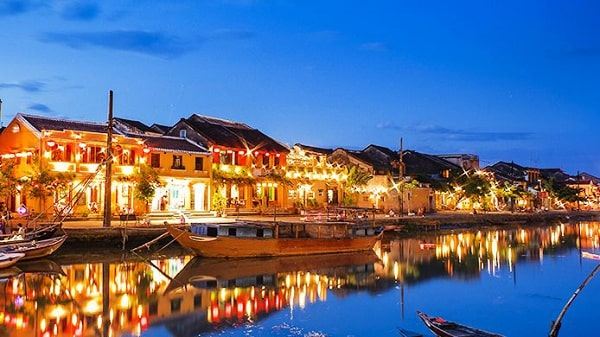

- ベトナムはどんな国
- 料理を紹介します。
- フォー (Pho)
- バインミー (Banh Mi)
- バインセオ (Banh Xeo)
- 春巻き (Goi Cuon)
- 揚げ春巻き (Cha Gio, Nem Ran )
- ベトナムの旅行を紹介します。
- ハロン湾 (Vinh Ha Long)
- ダナン (Da Nang)
- ホイアン (Hoi An)
- フエ (Hue)
- フーコック島 (Dao Phu Quoc)
ベトナム(Vietname)は東南アジアのインドネシア半島の東側に存在する国です。 首都はハノイです。一番大きい都市はホーチミン市です。母国語はベトナム語です。
ベトナムの料理の代表の一つです。フォーは牛肉や鶏肉を使用します。
バインミーもベトナムの料理の代表の一つです。
地方によって味が違います。秋部は塩っぱい味、南部は甘い味です。
 `
`蒸し春巻きとか豚肉とか海老とかもやしとか”Bun”という麵類などで作りますが付け汁で美味しさを決めます。
南部の名物です。2011年にCNNチャンネルに選ばれた ”世界で最もおいしい料理トップ50” の一つです。2012にアジア料理記録ブックに名前を書かれました。

UNESCOに世界自然遺産の一つに認められました。ハロン湾は様々な入り海や島が集まられました。

ダナン (Da Nang)は海の都市です。


ホイアン (Hoi An)は元町で (Da Nang)から30kmが掛かります。

フエ (Hue)も元町で昔からの城がまだ存在します。
休日に別の所でのんびりしたい時にフーコック島がよく選ばれました。一番有名なリゾートは高級のVinpearl Phu Quocです。